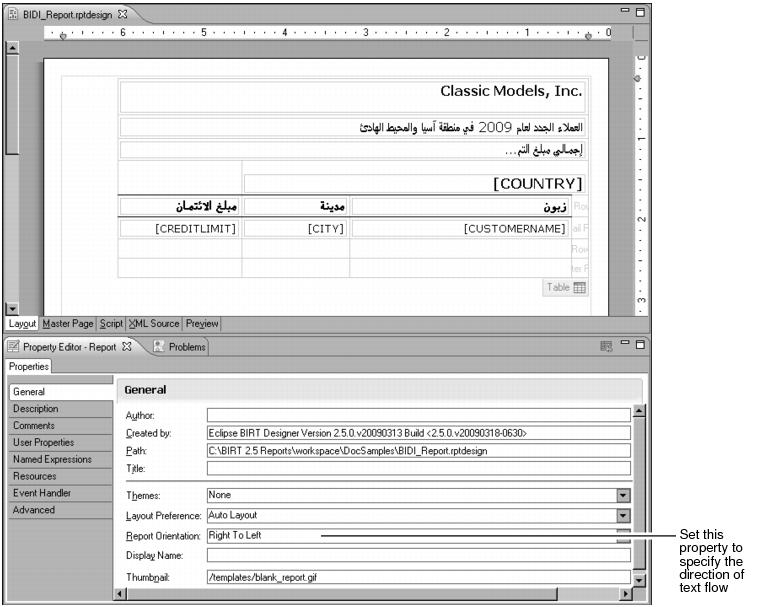
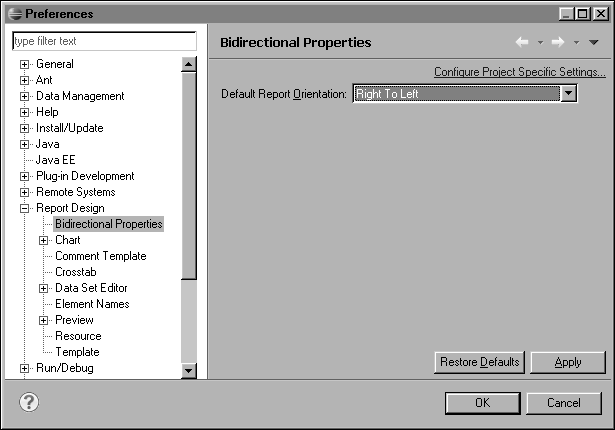

To create a report that displays text from right to left, all you do is change one report property setting. Select the report, and in the General properties of Property Editor, set the Report Orientation property to Right to Left. Figure 6‑1 shows a report design and Property Editor displaying the report’s general properties, including the Report Orientation property.

Notice in the layout editor that, aside from the text flow, the user interface elements are now also in the opposite direction. The scroll bar, typically on the right of the window, is on the left. The vertical ruler, typically on the left side of the window, is on the right. The table shifts to the right side of the page, and the table tab and row information move to the right side of the table. These direction changes make it easier to design a right-to-left report.
If you want all new reports to use the right-to-left orientation by default, set the Default Report Orientation property in Preferences, as shown in Figure 6‑2. To access this property, select Window→Preferences, and choose Report Design—Bidirectional Properties.

Alternatively, you can set the Default Report Orientation property for new reports in a specific project or projects, rather than for all reports in the workspace. To do so, on the page shown in Figure 6‑2, choose Configure Project Specific Settings, select the desired project or projects, and set the Default Report Orientation property.